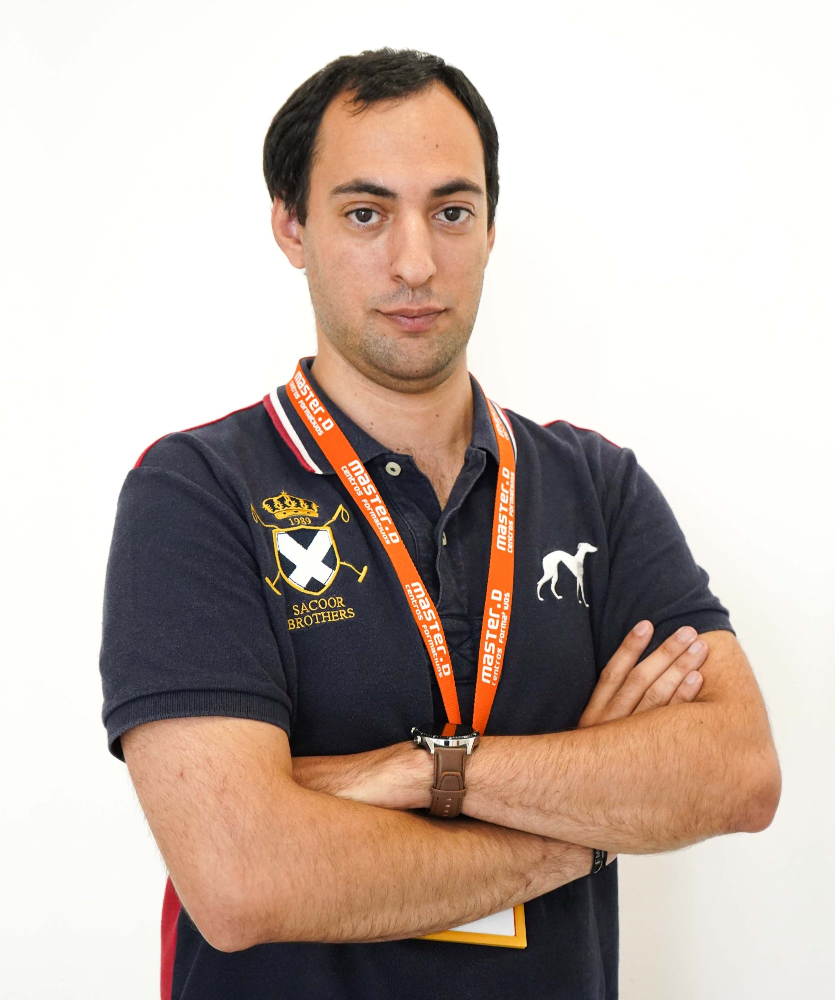
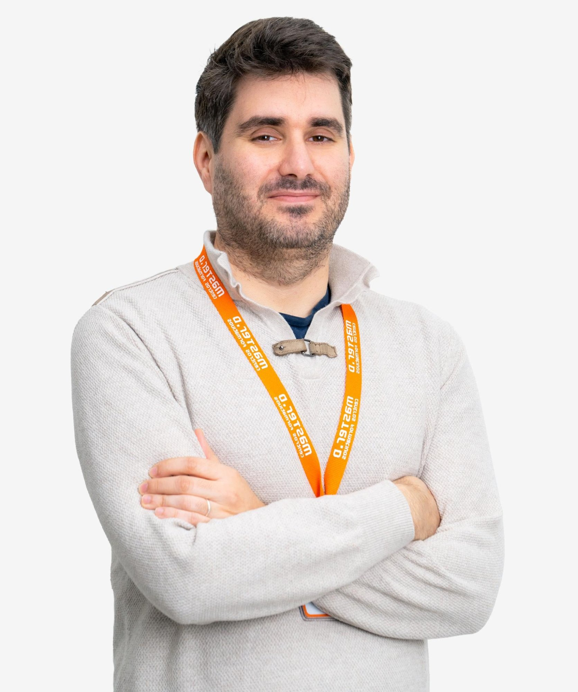
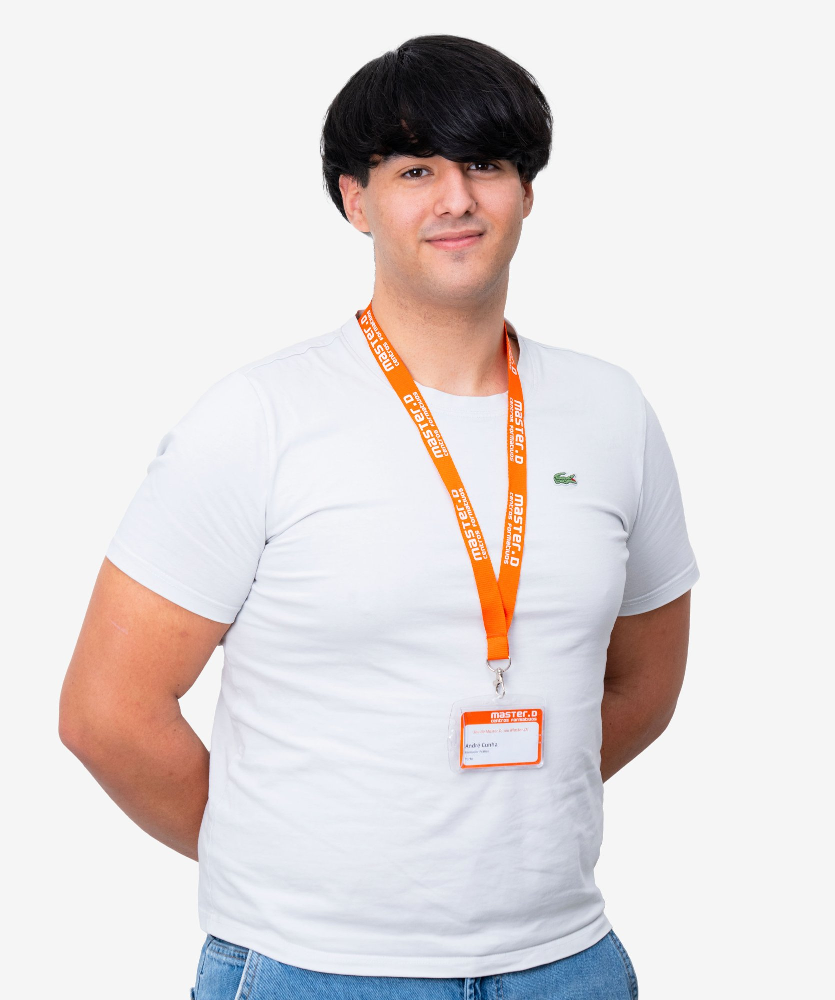
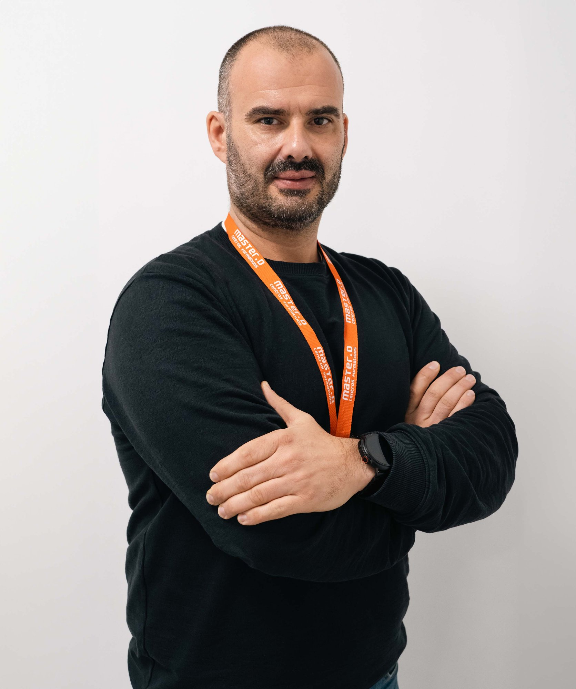

Conheça os profissionais que vão acompanhar a sua formação — passe o cursor sobre cada cartão para saber mais.
Formação na área de Gestão de Equipamentos Informáticos, com experiência em consultoria, implementação e manutenção de redes e parques informáticos, bem como em suporte técnico remoto e presencial e na implementação de políticas de segurança.
Docente com formação pedagógica e curso avançado de informática. Experiência no ensino e acompanhamento de formandos na área das tecnologias de informação, promovendo a aprendizagem de competências informáticas essenciais em contexto académico e profissional.

Preparador Técnico do Centro Formativo de Lisboa.
Preparador Técnico do Centro Formativo de Lisboa.
Preparador Técnico do Centro Formativo de Lisboa.
Preparadora Técnica do Centro Formativo de Lisboa.

Preparador Técnico do Centro Formativo do Porto.

Preparador Técnico do Centro Formativo do Porto.
Preparador Técnico do Centro Formativo de Braga.

Preparador Técnico do Centro Formativo de Braga.
Preparador Técnico do Centro Formativo de Coimbra.
Preparador Técnico do Centro Formativo de Coimbra.
Preparador Técnico do Centro Formativo de Faro.
Preparador Técnico do Centro Formativo de Faro.